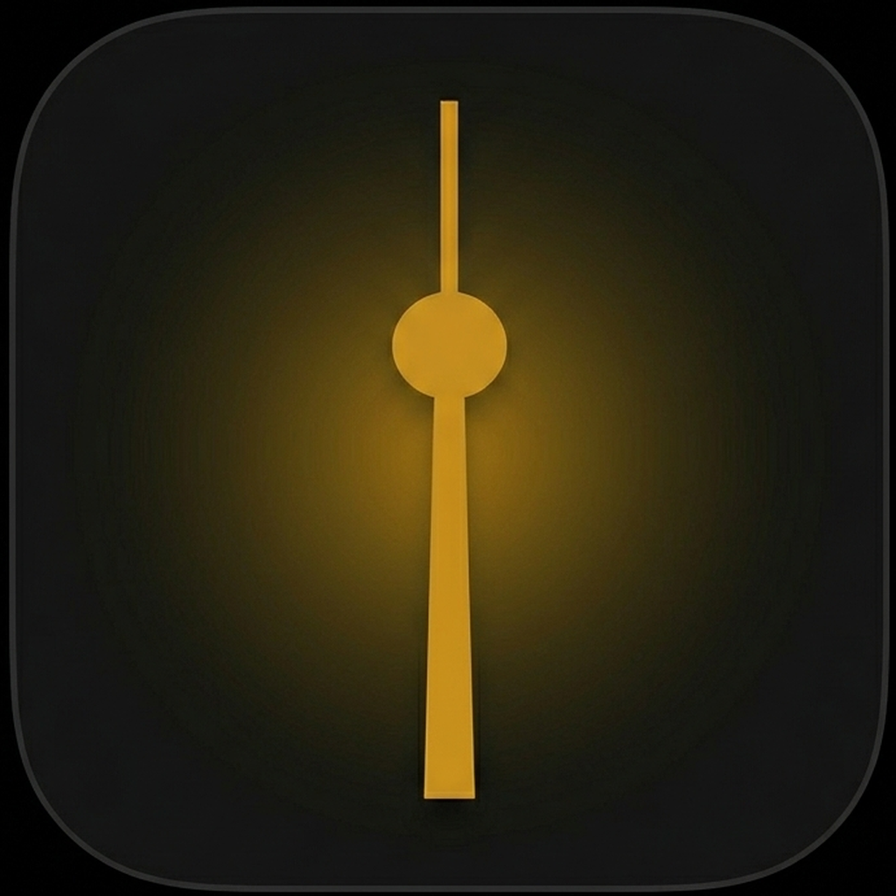
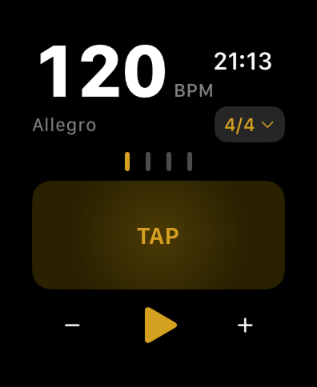
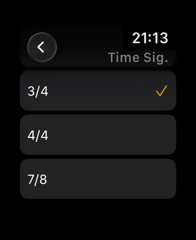
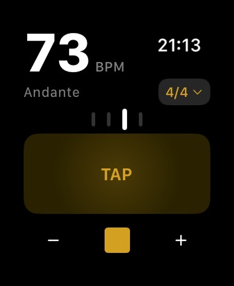
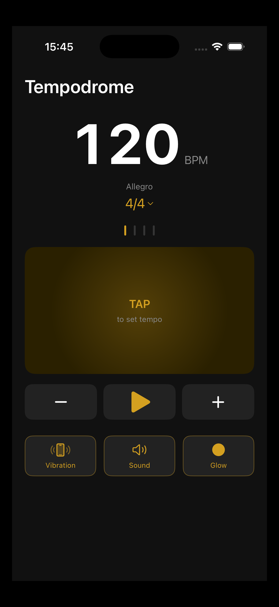
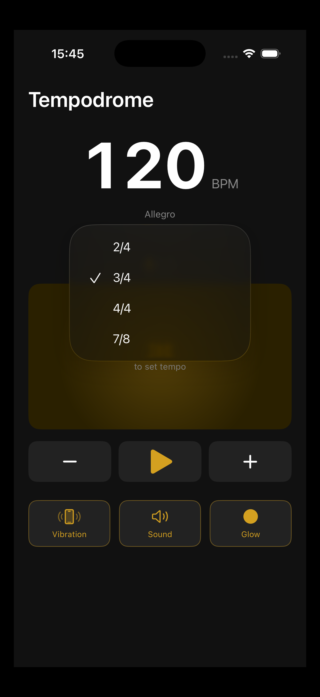
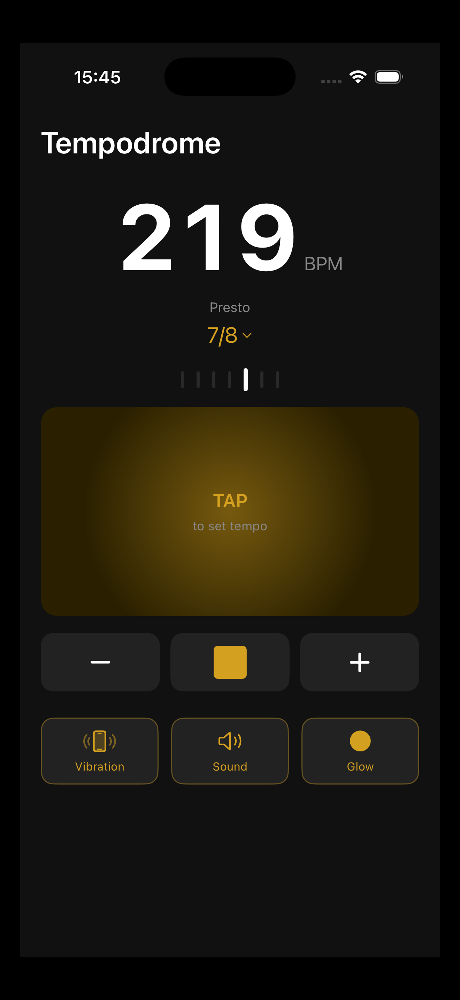

Feel the beat.
Tempodrome is a haptic metronome for iPhone and Apple Watch. Precise, personal, and always in time.
Launching this autumn on iPhone and Apple Watch.

Tap to join the waitlist and be first to know.

Tempodrome is a haptic metronome for iPhone and Apple Watch. Precise, personal, and always in time.
Launching this autumn on iPhone and Apple Watch.
Tap to join the waitlist and be first to know.
Tempodrome runs natively on Apple Watch with its own independent engine. Raise your wrist, set your tempo, and play.
No Apple Watch? No problem. Full metronome on iPhone with haptic vibration, audible click, visual glow, or any combination.
From 20 to 300 BPM. Tap tempo, crown control, or type it in directly. Time signatures from 2/4 to 7/8.
Use Tempodrome while walking, cooking, or commuting. Let the haptic pulse run in the background and internalize the beat.
Apple Watch



iPhone



On Apple Watch, rotate the Digital Crown to adjust the BPM up or down. On iPhone, tap the — and + buttons, or tap the BPM number to type it in directly using the keyboard.
Tap the TAP area repeatedly in time with any music you're hearing. Tempodrome calculates the average tempo from your last four taps and sets it automatically.
On iPhone, toggle Vibration, Sound, and Glow independently. Use any combination — silent practice with just vibration and glow, or the full experience with all three on.
Tap the time signature badge (4/4 by default) to open the selector. Choose from 2/4, 3/4, 4/4, 5/4, 6/8, 7/8 and more. The beat bars update instantly to reflect your selection.
Press the play button to start. Press stop to pause. You can control playback from either your iPhone or Apple Watch independently.
No — Tempodrome works fully on iPhone on its own. The Apple Watch adds the haptic-on-wrist experience, but the iPhone app is a complete metronome independently.
Yes. Once installed, the Watch app runs its own independent engine. You can leave your phone in your bag and use Tempodrome entirely from your wrist.
On iPhone, Tempodrome continues running when the screen is off. On Apple Watch, the haptic engine keeps firing even with your wrist down, using an extended runtime session.
Tempodrome supports 2/4, 3/4, 4/4, 5/4, 6/8, and 7/8. More time signatures are planned for future updates.
Tempodrome supports tempos from 20 BPM (Larghissimo) to 300 BPM (Prestissimo).
Sync between devices is planned for a future update. In the current version, iPhone and Apple Watch each run independently for maximum reliability.
Have a question or found a bug? Get in touch — your feedback helps make Tempodrome better.
support@tempodrome.com